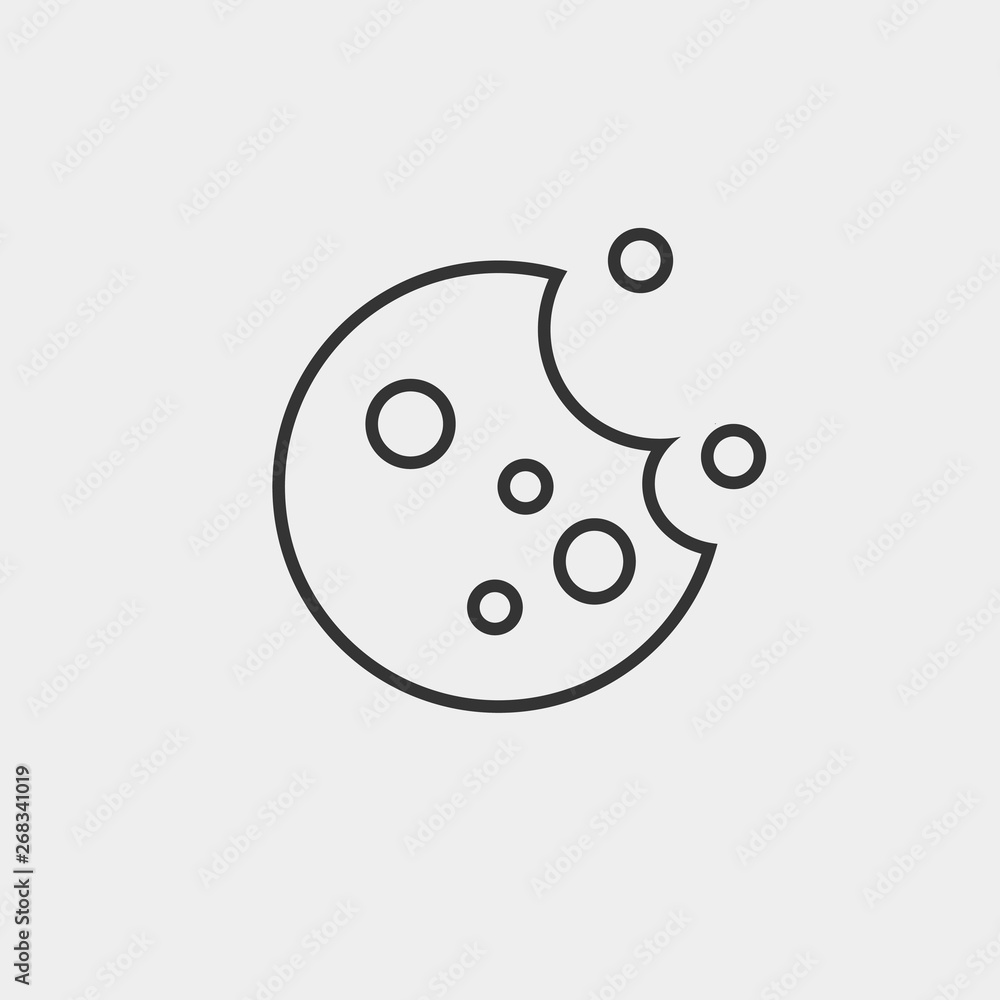

Kolacici

Politika kolacica sajta "BONDI"
Verzija je azurirana Maja 2023.
Zastiat vasih licnih podataka nam je vazna, stoga posebnu paznju posvecujemo zastiti licnih podatakasvih sa kojima obavljamo komercijalne poslove, kao i privatnost posetilaca koje pristupaju sajtu "bondi", u skladu sa uredbom (EU) 216/679 Evropskog parlamenta i saveta, od 27.aprila 2016 u vezi sa obradom licnih podataka i slobondim kretanjem takvih podataka1. Koje kolacice imamo i kako se koriste: Kolacici su male tekstualne datoteke koje se prosledjuju na vas racunar ili na vas telefonod strane sajta koje posecujete.Vas web pretrazivac salje ove kolacice nazad na web lokaciju koja ih je postavila pri svakoj sledecoj poseti, tako da oni mogu uciniti da web lokacija radi efikasnije, kao i da pruzi korisniku informacije kao sto je nacin na koji koriste web lokaciju. Pdaci koje prikupljamo na web stranici "bondi" koriscenjem modula kolacica pomazu nam da bolje razumemo nase kupce, kako bismo vam mogli ponuditi korisnicko iskustvo koje je vise orijentisano. Koristeci znanje o vasim prethodnim posetama nasem sajtu, mozemo poboljsati sledece posete prilagodjjavanjem naseg sadrzaja vasim zahtevima. Koristimo kolacice uglavnom zato sto zelimo da nase web starnice i mobilne aplikacije ucinimo lakim za koriscenje i zainteresovani smo za anonimno ponasanje korisnika. Uopsteno govoreci, nasi kolacici ne cuvaju osetljive ili licne informacije, kao sto su vase ime i adresa ili detalje debitne/kreditne kartice. U zavisnosti od trajanja njihove upotrebe, kolacici se mogu klasifikovati kao "za sesije" ili "trajni":
- olacic sesije - ostaje na uredjaju koje se koristi sve dok trajevasa onljan sesija i nestaje sa racunara ili uredjaja kada zatvorite pretrazivac.
- Trajni kolacici - ostaju na racunaru ili uredjaju nakon sto se pregledac zatvori na vremenski period koji je odrdio kolacic.
Siteul "BONDI" sajt koristi trajne kolacice
Koristimo moudle kolacica(i rezultirajuce podatke) u svrhe opisane u Politici privatnosti.
"BONDI"
Str. Ioan Cuza 13
Craiova
Tel: 0735984632
www.bondi.rs
2. Kako se kolacici koriste na sajtu BONDI.rs
Glavne svrhe za koje se kolacici koriste su sledece :
2.1. Strogo neophodni kolacici
- Ovi kolacici su neophodni za funkcioonalnost web stranice.
- Ovi kolacici ne prikupljaju informacije o vama koje bi se mgle koristiti za marketing ili analize (pogledajte dole).
2.2. Kolacici za performanse
- Ovi kolacici prikupljaju informacije o tome kako posetioci koriste web lokaciju, na primer, kojoj od SDV stranica posetioci cesce pristupaju.
- Oni takodje mogu da nam pokazu sa koje web stranice ili e-poste su posetioci stigli na nas sajt i da li ste otvorili imejl koji smo vam poslali.
2.3. Funkcionalni kolacici
- Ovi kolacici omogucavaju nasoj web stranici da sacuva izbore koje ste napravili o tome kako zelite da funcionisete. Primeri bi bili da zapamti da li ste potvrdili obavestenje u vezi sa politikom kolacica ili ako ste vec ucestvovali u studiji, tako da znate da vam ove porukene treba prikazivati.
2.4. Kolacic analitike
- Ovi kolacici se koriste za prikupljane informacija o tome kako posetioci pristupaju i koriste nasu web stranicu. Koristi se za pracenje ucinka, izvestavanjei pruzanje podataka koje ce uticati na poboljasnje sajta.
- Kolacici prikupljaju informacije u anonimnom obliku, ukljucujuci i broj ljudi koje posete sajt, njihov pol i godine, broj stranica koje su analizirali, koje stranice su posetili i koliko dugo su proveli na sajtu.
Ako ne dozvolite kolacice, imacete manje ciljani sadrzaj.
Sajt BONDI koristi :
Kolacice sesije :
- PHPSESSID - kolacic sesije i istice kada se sajt zatvori
Statisticki i marketinski kolacic iz Google analitike:
- _ga - vazi 2 godine,
- _gat - vazi 1 minut,
- _gid - vazi 24 sata,
- __utmz - zi 6 meseci,
- __utma - vazi 2 godine,,
- __utmb - vazi 30 minuta,
- __utmt - zi 10 minuta,
- __utm - vazi dok se pregledac ne zatvori,
- __utmc - isitce kada se pregledac i IDE ne zatvore,
(Koristi ga Google DoubleClick za belezenje radnih korisnika nakon pregleda ili klina na jedan od reklamnih banera, kao meru efeikasnisti oglasavanja.)
3.Koje vrste licnih podataka se pristupa putem kolacica ?
Licni podaci kojima se pristupa koriscenjem kolacica se prikuplja samo da bi se olaksale odredjene funkcionalnosti za korisinka. Ovi podaci su sifrovani na nacin koji onemogucava neovlascenim licima da im pristupe. Kolaci sadrze informacije koje povezuju web pretrazivac(korisnika) i odredjeni web server(web stranicu). Ako pregledac ponovo pristupi tom web serveru, moze da procita informacije koje su vec uskladistene i da reaguje u skladu sa tim. Kolacici obezbedjuju i podrzavaju napore mnogih web sajtova da ponude udobne usluge korisnika npr. - podesavanja privatnosti na mrezi, opcije jezika web sajta, itd.
4. Kontrola, deaktivacija i brisanje kolacica
Vecina kolacica se moze kontrolisati iz podesavanja vaseg pretrazivaca. Mozete da:
- Pogledajte pojedinacne kolacice zajedno sa njihovim datumom isteka i izbrisite ih.
- Blokirajte kolacice trece strane(ili zatrazite da se ne prate).
- Blokirajte sve kolacice.
- Izbrisite sve kolacice kada zatvorite pretrazivac.
Ako odlucite da blokirate sve kolacice, mnoge web stranice nece raditi ispravno i funkcionalnost moze biti ostecena. Iz tog razloga, ne preporucujemo onemogucavanje kolacica kda korisite nasu web stranicu.
Linkovi u nastavku ce vas voditi do uspustva za promenu podesavanja kolacica u najpopularnijim pretrazivacima
- Google Chrome:https://support.google.com/chrome/answer/95647?hl=en
- Firefox:https://support.mozilla.org/en-US/kb/cookies-information-websites-store-on-your-computer
- Safari:https://support.apple.com/en-gb/guide/safari/sfri11471/mac